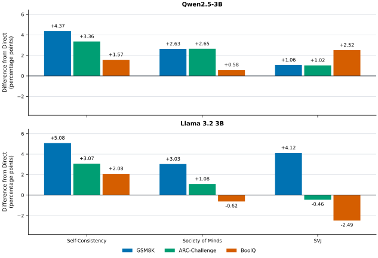
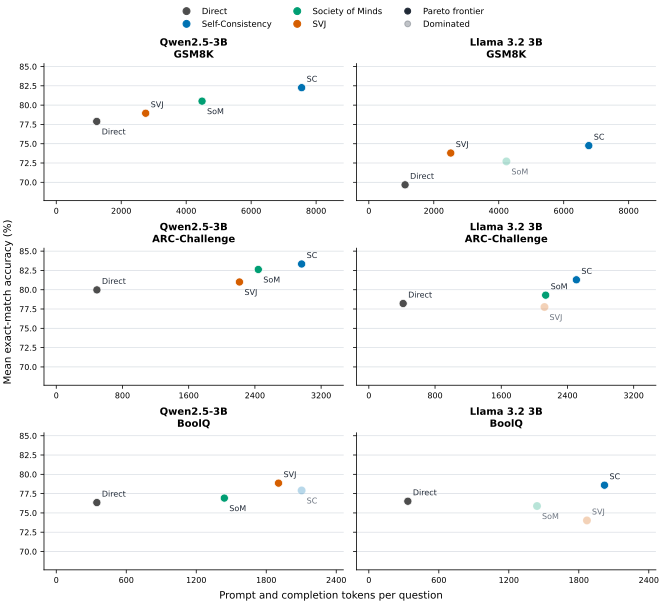
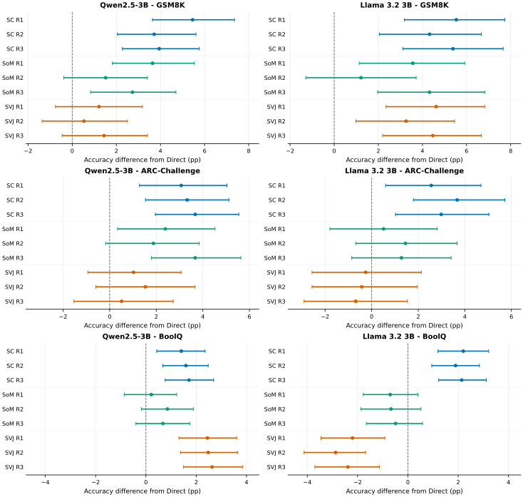

Experiment results and analysis
Coverage
72 of 72 loaded runs completed. 0 observations failed; 1,374 (0.99%) were unparseable and scored zero.
No data-quality warnings were found.
Key findings
- Self-Consistency improves on Direct in 6/6 configurations and has the highest accuracy in 5/6 (including ties).
- Largest improvement: Self-Consistency on Llama 3.2 3B / GSM8K, +5.08 pp; 4.63x Direct latency.
- Largest decline: SVJ on Llama 3.2 3B / BoolQ, -2.49 pp; 3.26x Direct latency.
- Society of Minds revision improves accuracy in 3/6 configurations and reduces it in 3/6; these comparisons cover only revised attempts.
Strategy comparison
| Strategy | Improved over Direct | Highest accuracy (incl. ties) | Mean gain vs Direct |
|---|---|---|---|
| Self-Consistency | 6/6 | 5/6 | +3.25 pp |
| Society of Minds | 5/6 | 0/6 | +1.56 pp |
| SVJ | 4/6 | 1/6 | +0.96 pp |
Mean gain by benchmark: GSM8K +3.38 pp, ARC-Challenge +1.79 pp, BoolQ +0.61 pp. Mean gain by model: Qwen2.5-3B +2.20 pp, Llama 3.2 3B +1.66 pp.
GSM8K
Qwen2.5-3B: Self-Consistency leads at 82.26%. Llama 3.2 3B: Self-Consistency leads at 74.75%.
| Model | Strategy | Accuracy | SD | Gain vs Direct | Calls / Q | Tokens / Q | Latency / Q | Latency vs Direct | Token trade-off |
|---|---|---|---|---|---|---|---|---|---|
| Qwen2.5-3B | Direct | 77.89% | 0.50 pp | - | 1.000 | 1,246 | 3.50 s | 1.00x | Frontier |
| Qwen2.5-3B | Self-Consistency | 82.26% | 0.46 pp | +4.37 pp | 6.059 | 7,554 | 16.38 s | 4.68x | Frontier |
| Qwen2.5-3B | Society of Minds | 80.52% | 0.60 pp | +2.63 pp | 3.940 | 4,488 | 9.68 s | 2.77x | Frontier |
| Qwen2.5-3B | SVJ | 78.95% | 0.46 pp | +1.06 pp | 3.000 | 2,753 | 6.80 s | 1.94x | Frontier |
| Llama 3.2 3B | Direct | 69.67% | 0.47 pp | - | 1.000 | 1,116 | 3.31 s | 1.00x | Frontier |
| Llama 3.2 3B | Self-Consistency | 74.75% | 0.27 pp | +5.08 pp | 6.078 | 6,772 | 15.30 s | 4.63x | Frontier |
| Llama 3.2 3B | Society of Minds | 72.71% | 1.15 pp | +3.03 pp | 4.246 | 4,236 | 9.05 s | 2.74x | Dominated |
| Llama 3.2 3B | SVJ | 73.79% | 0.34 pp | +4.12 pp | 3.000 | 2,523 | 5.90 s | 1.78x | Frontier |
ARC-Challenge
Qwen2.5-3B: Self-Consistency leads at 83.33%. Llama 3.2 3B: Self-Consistency leads at 81.29%.
| Model | Strategy | Accuracy | SD | Gain vs Direct | Calls / Q | Tokens / Q | Latency / Q | Latency vs Direct | Token trade-off |
|---|---|---|---|---|---|---|---|---|---|
| Qwen2.5-3B | Direct | 79.98% | 0.58 pp | - | 1.000 | 491 | 3.69 s | 1.00x | Frontier |
| Qwen2.5-3B | Self-Consistency | 83.33% | 0.32 pp | +3.36 pp | 6.045 | 2,965 | 21.26 s | 5.76x | Frontier |
| Qwen2.5-3B | Society of Minds | 82.62% | 0.84 pp | +2.65 pp | 3.757 | 2,441 | 13.98 s | 3.79x | Frontier |
| Qwen2.5-3B | SVJ | 81.00% | 0.85 pp | +1.02 pp | 3.000 | 2,213 | 5.95 s | 1.61x | Frontier |
| Llama 3.2 3B | Direct | 78.21% | 0.20 pp | - | 1.000 | 415 | 2.47 s | 1.00x | Frontier |
| Llama 3.2 3B | Self-Consistency | 81.29% | 0.38 pp | +3.07 pp | 6.055 | 2,508 | 13.79 s | 5.58x | Frontier |
| Llama 3.2 3B | Society of Minds | 79.29% | 0.40 pp | +1.08 pp | 3.966 | 2,137 | 8.85 s | 3.58x | Frontier |
| Llama 3.2 3B | SVJ | 77.76% | 0.27 pp | -0.46 pp | 3.000 | 2,122 | 5.31 s | 2.15x | Dominated |
BoolQ
Qwen2.5-3B: SVJ leads at 78.86%. Llama 3.2 3B: Self-Consistency leads at 78.59%.
| Model | Strategy | Accuracy | SD | Gain vs Direct | Calls / Q | Tokens / Q | Latency / Q | Latency vs Direct | Token trade-off |
|---|---|---|---|---|---|---|---|---|---|
| Qwen2.5-3B | Direct | 76.34% | 0.13 pp | - | 1.000 | 348 | 1.27 s | 1.00x | Frontier |
| Qwen2.5-3B | Self-Consistency | 77.91% | 0.19 pp | +1.57 pp | 6.033 | 2,103 | 6.60 s | 5.18x | Dominated |
| Qwen2.5-3B | Society of Minds | 76.92% | 0.41 pp | +0.58 pp | 3.604 | 1,441 | 4.20 s | 3.30x | Frontier |
| Qwen2.5-3B | SVJ | 78.86% | 0.11 pp | +2.52 pp | 3.000 | 1,905 | 3.73 s | 2.92x | Frontier |
| Llama 3.2 3B | Direct | 76.51% | 0.16 pp | - | 1.000 | 335 | 1.14 s | 1.00x | Frontier |
| Llama 3.2 3B | Self-Consistency | 78.59% | 0.06 pp | +2.08 pp | 6.033 | 2,020 | 5.73 s | 5.05x | Frontier |
| Llama 3.2 3B | Society of Minds | 75.89% | 0.14 pp | -0.62 pp | 3.684 | 1,442 | 4.10 s | 3.61x | Dominated |
| Llama 3.2 3B | SVJ | 74.03% | 0.21 pp | -2.49 pp | 3.000 | 1,870 | 3.70 s | 3.26x | Dominated |
Strategy behavior
Self-Consistency voting
Voting changed candidate accuracy by +2.43 pp to +7.75 pp across 6 configurations.
| Model | Benchmark | Initial-six accuracy | Final accuracy | Voting gain |
|---|---|---|---|---|
| Qwen2.5-3B | GSM8K | 76.69% | 82.26% | +5.57 pp |
| Qwen2.5-3B | ARC-Challenge | 79.76% | 83.33% | +3.57 pp |
| Qwen2.5-3B | BoolQ | 75.48% | 77.91% | +2.43 pp |
| Llama 3.2 3B | GSM8K | 67.00% | 74.75% | +7.75 pp |
| Llama 3.2 3B | ARC-Challenge | 75.68% | 81.29% | +5.60 pp |
| Llama 3.2 3B | BoolQ | 75.26% | 78.59% | +3.33 pp |
Initial agreement and final accuracy
| Agreement among six initial answers | Attempts | Final accuracy |
|---|---|---|
| All six gave the same answer | 21,923 | 87.77% |
| Four or five gave the same answer | 9,306 | 69.70% |
| One answer won with only one to three votes | 1,785 | 52.16% |
| Two or more answers tied for the most votes | 1,543 | 45.11% |
| No usable answer was extracted | 9 | 0.00% |
Society of Minds revision
| Model | Benchmark | Revised attempts | All three agree after revision | Before | After | Change | Corrections | Degradations |
|---|---|---|---|---|---|---|---|---|
| Qwen2.5-3B | GSM8K | 1,240 (31.34%) | 22.98% | 49.35% | 53.39% | +4.03 pp | 82 | 32 |
| Qwen2.5-3B | ARC-Challenge | 887 (25.23%) | 36.87% | 54.79% | 57.50% | +2.71 pp | 79 | 55 |
| Qwen2.5-3B | BoolQ | 1,974 (20.12%) | 49.29% | 61.70% | 57.90% | -3.80 pp | 154 | 229 |
| Llama 3.2 3B | GSM8K | 1,644 (41.55%) | 24.03% | 50.36% | 50.18% | -0.18 pp | 99 | 102 |
| Llama 3.2 3B | ARC-Challenge | 1,132 (32.20%) | 45.05% | 56.18% | 56.54% | +0.35 pp | 101 | 97 |
| Llama 3.2 3B | BoolQ | 2,238 (22.81%) | 42.67% | 63.18% | 54.20% | -8.98 pp | 187 | 388 |
Solver-Verifier-Judge changes
| Model | Benchmark | Wrong Solver → correct final | Missing Solver → correct final | Correct Solver → wrong final |
|---|---|---|---|---|
| Qwen2.5-3B | GSM8K | 108 | 0 | 28 |
| Qwen2.5-3B | ARC-Challenge | 13 | 59 | 14 |
| Qwen2.5-3B | BoolQ | 71 | 287 | 147 |
| Llama 3.2 3B | GSM8K | 14 | 0 | 30 |
| Llama 3.2 3B | ARC-Challenge | 16 | 21 | 16 |
| Llama 3.2 3B | BoolQ | 28 | 550 | 184 |
Final selection when Solver and Verifier disagree
| Model | Benchmark | Disagreements | Matched Solver | Matched Verifier | Matched neither |
|---|---|---|---|---|---|
| Qwen2.5-3B | GSM8K | 245 | 63 | 174 | 8 |
| Qwen2.5-3B | ARC-Challenge | 21 | 4 | 17 | 0 |
| Qwen2.5-3B | BoolQ | 139 | 64 | 75 | 0 |
| Llama 3.2 3B | GSM8K | 398 | 299 | 76 | 23 |
| Llama 3.2 3B | ARC-Challenge | 481 | 445 | 36 | 0 |
| Llama 3.2 3B | BoolQ | 3,964 | 3,903 | 61 | 0 |
Counts are repeated attempts. Revision rate uses all analyzed attempts; agreement and before/after accuracy use revised attempts. Agreement requires three valid answers; final correctness uses saved benchmark scores.
Statistical comparison with Direct
54 paired comparisons. Exact McNemar tests show 30 significant increases, 3 decreases, 21 not significant.
We calculate a 95% confidence interval for each accuracy difference using a paired BCa bootstrap with 20,000 resamples. Questions are resampled with the two strategies' outcomes kept together. McNemar p-values use a 0.05 significance threshold. These intervals and tests describe individual comparisons within each repetition, not the mean across repetitions. No adjustment is applied across the 54 comparisons. 0 comparisons skipped.
| Strategy | Significant increase | Significant decrease | Not significant |
|---|---|---|---|
| Self-Consistency | 18 | 0 | 0 |
| Society of Minds | 6 | 0 | 12 |
| SVJ | 6 | 3 | 9 |
Paired results, confidence intervals and p-values
| Model | Benchmark | Strategy | Run | Gain vs Direct | 95% CI | McNemar p | McNemar result |
|---|---|---|---|---|---|---|---|
| Llama 3.2 3B | ARC-Challenge | SVJ | 1 | -0.26 pp | [-2.56, +2.13] pp | 0.8862 | Not significant |
| Llama 3.2 3B | ARC-Challenge | Self-Consistency | 1 | +2.56 pp | [+0.60, +4.69] pp | 0.0176 | Significant increase |
| Llama 3.2 3B | ARC-Challenge | Society of Minds | 1 | +0.51 pp | [-1.79, +2.82] pp | 0.7155 | Not significant |
| Llama 3.2 3B | ARC-Challenge | SVJ | 2 | -0.43 pp | [-2.56, +1.96] pp | 0.7676 | Not significant |
| Llama 3.2 3B | ARC-Challenge | Self-Consistency | 2 | +3.67 pp | [+1.79, +5.72] pp | 0.0004464 | Significant increase |
| Llama 3.2 3B | ARC-Challenge | Society of Minds | 2 | +1.45 pp | [-0.68, +3.67] pp | 0.221 | Not significant |
| Llama 3.2 3B | ARC-Challenge | SVJ | 3 | -0.68 pp | [-2.90, +1.54] pp | 0.5979 | Not significant |
| Llama 3.2 3B | ARC-Challenge | Self-Consistency | 3 | +2.99 pp | [+1.02, +5.03] pp | 0.004301 | Significant increase |
| Llama 3.2 3B | ARC-Challenge | Society of Minds | 3 | +1.28 pp | [-0.85, +3.41] pp | 0.2757 | Not significant |
| Llama 3.2 3B | BoolQ | SVJ | 1 | -2.20 pp | [-3.46, -0.92] pp | 0.0007769 | Significant decrease |
| Llama 3.2 3B | BoolQ | Self-Consistency | 1 | +2.20 pp | [+1.19, +3.21] pp | 2.142e-05 | Significant increase |
| Llama 3.2 3B | BoolQ | Society of Minds | 1 | -0.70 pp | [-1.77, +0.40] pp | 0.2335 | Not significant |
| Llama 3.2 3B | BoolQ | SVJ | 2 | -2.87 pp | [-4.13, -1.68] pp | 6.092e-06 | Significant decrease |
| Llama 3.2 3B | BoolQ | Self-Consistency | 2 | +1.90 pp | [+0.95, +2.84] pp | 9.297e-05 | Significant increase |
| Llama 3.2 3B | BoolQ | Society of Minds | 2 | -0.67 pp | [-1.87, +0.52] pp | 0.2839 | Not significant |
| Llama 3.2 3B | BoolQ | SVJ | 3 | -2.39 pp | [-3.70, -1.13] pp | 0.0002494 | Significant decrease |
| Llama 3.2 3B | BoolQ | Self-Consistency | 3 | +2.14 pp | [+1.22, +3.12] pp | 1.225e-05 | Significant increase |
| Llama 3.2 3B | BoolQ | Society of Minds | 3 | -0.49 pp | [-1.65, +0.58] pp | 0.4187 | Not significant |
| Llama 3.2 3B | GSM8K | SVJ | 1 | +4.62 pp | [+2.35, +6.82] pp | 6.211e-05 | Significant increase |
| Llama 3.2 3B | GSM8K | Self-Consistency | 1 | +5.53 pp | [+3.18, +7.73] pp | 2.211e-06 | Significant increase |
| Llama 3.2 3B | GSM8K | Society of Minds | 1 | +3.56 pp | [+1.14, +5.91] pp | 0.003882 | Significant increase |
| Llama 3.2 3B | GSM8K | SVJ | 2 | +3.26 pp | [+0.99, +5.46] pp | 0.005604 | Significant increase |
| Llama 3.2 3B | GSM8K | Self-Consistency | 2 | +4.32 pp | [+2.05, +6.67] pp | 0.0003093 | Significant increase |
| Llama 3.2 3B | GSM8K | Society of Minds | 2 | +1.21 pp | [-1.29, +3.71] pp | 0.3683 | Not significant |
| Llama 3.2 3B | GSM8K | SVJ | 3 | +4.47 pp | [+2.20, +6.67] pp | 0.0001254 | Significant increase |
| Llama 3.2 3B | GSM8K | Self-Consistency | 3 | +5.38 pp | [+3.11, +7.66] pp | 4.661e-06 | Significant increase |
| Llama 3.2 3B | GSM8K | Society of Minds | 3 | +4.32 pp | [+1.97, +6.82] pp | 0.0005565 | Significant increase |
| Qwen2.5-3B | ARC-Challenge | SVJ | 1 | +1.02 pp | [-0.94, +3.07] pp | 0.3627 | Not significant |
| Qwen2.5-3B | ARC-Challenge | Self-Consistency | 1 | +3.07 pp | [+1.28, +5.03] pp | 0.001565 | Significant increase |
| Qwen2.5-3B | ARC-Challenge | Society of Minds | 1 | +2.39 pp | [+0.34, +4.52] pp | 0.02925 | Significant increase |
| Qwen2.5-3B | ARC-Challenge | SVJ | 2 | +1.54 pp | [-0.60, +3.67] pp | 0.1788 | Not significant |
| Qwen2.5-3B | ARC-Challenge | Self-Consistency | 2 | +3.33 pp | [+1.54, +5.12] pp | 0.0004453 | Significant increase |
| Qwen2.5-3B | ARC-Challenge | Society of Minds | 2 | +1.88 pp | [-0.17, +3.84] pp | 0.08397 | Not significant |
| Qwen2.5-3B | ARC-Challenge | SVJ | 3 | +0.51 pp | [-1.54, +2.73] pp | 0.6946 | Not significant |
| Qwen2.5-3B | ARC-Challenge | Self-Consistency | 3 | +3.67 pp | [+1.96, +5.55] pp | 7.516e-05 | Significant increase |
| Qwen2.5-3B | ARC-Challenge | Society of Minds | 3 | +3.67 pp | [+1.79, +5.63] pp | 0.0003002 | Significant increase |
| Qwen2.5-3B | BoolQ | SVJ | 1 | +2.45 pp | [+1.31, +3.61] pp | 3.945e-05 | Significant increase |
| Qwen2.5-3B | BoolQ | Self-Consistency | 1 | +1.41 pp | [+0.43, +2.35] pp | 0.004492 | Significant increase |
| Qwen2.5-3B | BoolQ | Society of Minds | 1 | +0.21 pp | [-0.86, +1.22] pp | 0.7287 | Not significant |
| Qwen2.5-3B | BoolQ | SVJ | 2 | +2.48 pp | [+1.38, +3.64] pp | 2.245e-05 | Significant increase |
| Qwen2.5-3B | BoolQ | Self-Consistency | 2 | +1.59 pp | [+0.67, +2.48] pp | 0.0007771 | Significant increase |
| Qwen2.5-3B | BoolQ | Society of Minds | 2 | +0.86 pp | [-0.18, +1.90] pp | 0.1201 | Not significant |
| Qwen2.5-3B | BoolQ | SVJ | 3 | +2.63 pp | [+1.50, +3.85] pp | 1.637e-05 | Significant increase |
| Qwen2.5-3B | BoolQ | Self-Consistency | 3 | +1.71 pp | [+0.76, +2.69] pp | 0.0006829 | Significant increase |
| Qwen2.5-3B | BoolQ | Society of Minds | 3 | +0.67 pp | [-0.40, +1.74] pp | 0.2404 | Not significant |
| Qwen2.5-3B | GSM8K | SVJ | 1 | +1.21 pp | [-0.76, +3.18] pp | 0.2499 | Not significant |
| Qwen2.5-3B | GSM8K | Self-Consistency | 1 | +5.46 pp | [+3.64, +7.35] pp | 5.607e-09 | Significant increase |
| Qwen2.5-3B | GSM8K | Society of Minds | 1 | +3.64 pp | [+1.82, +5.53] pp | 0.0002207 | Significant increase |
| Qwen2.5-3B | GSM8K | SVJ | 2 | +0.53 pp | [-1.36, +2.50] pp | 0.6426 | Not significant |
| Qwen2.5-3B | GSM8K | Self-Consistency | 2 | +3.71 pp | [+2.05, +5.61] pp | 6.518e-05 | Significant increase |
| Qwen2.5-3B | GSM8K | Society of Minds | 2 | +1.52 pp | [-0.38, +3.41] pp | 0.1377 | Not significant |
| Qwen2.5-3B | GSM8K | SVJ | 3 | +1.44 pp | [-0.45, +3.41] pp | 0.171 | Not significant |
| Qwen2.5-3B | GSM8K | Self-Consistency | 3 | +3.94 pp | [+2.27, +5.76] pp | 8.233e-06 | Significant increase |
| Qwen2.5-3B | GSM8K | Society of Minds | 3 | +2.73 pp | [+0.83, +4.70] pp | 0.007088 | Significant increase |
Analysis data, including paired counts, confidence intervals and p-values (JSON)
Figures

Mean accuracy difference from Direct, in percentage points. Download: PDF · SVG


Faded points are dominated: another strategy achieves at least the same accuracy with no more tokens, improving at least one measure. Download: PDF · SVG


Points show accuracy differences from Direct; horizontal bars show individual 95% paired BCa confidence intervals. R1-R3 are separate repetitions. Colors identify strategies. The dashed line marks no difference; intervals are not adjusted across comparisons. Download: PDF · SVG

Per-run scores and completion checks
| Model | Benchmark | Strategy | Repetition | Status | Evaluated | Failed | Unparseable | Score |
|---|---|---|---|---|---|---|---|---|
| Qwen2.5-3B | GSM8K | Direct | 1 | completed | 1,319 | 0 | 22 | 77.33% |
| Qwen2.5-3B | GSM8K | Direct | 2 | completed | 1,319 | 0 | 20 | 78.32% |
| Qwen2.5-3B | GSM8K | Direct | 3 | completed | 1,319 | 0 | 24 | 78.01% |
| Qwen2.5-3B | GSM8K | Self-Consistency | 1 | completed | 1,319 | 0 | 23 | 82.79% |
| Qwen2.5-3B | GSM8K | Self-Consistency | 2 | completed | 1,319 | 0 | 29 | 82.03% |
| Qwen2.5-3B | GSM8K | Self-Consistency | 3 | completed | 1,319 | 0 | 25 | 81.96% |
| Qwen2.5-3B | GSM8K | Society of Minds | 1 | completed | 1,319 | 0 | 12 | 80.97% |
| Qwen2.5-3B | GSM8K | Society of Minds | 2 | completed | 1,319 | 0 | 17 | 79.83% |
| Qwen2.5-3B | GSM8K | Society of Minds | 3 | completed | 1,319 | 0 | 19 | 80.74% |
| Qwen2.5-3B | GSM8K | SVJ | 1 | completed | 1,319 | 0 | 1 | 78.54% |
| Qwen2.5-3B | GSM8K | SVJ | 2 | completed | 1,319 | 0 | 0 | 78.85% |
| Qwen2.5-3B | GSM8K | SVJ | 3 | completed | 1,319 | 0 | 0 | 79.45% |
| Qwen2.5-3B | ARC-Challenge | Direct | 1 | completed | 1,172 | 0 | 6 | 80.63% |
| Qwen2.5-3B | ARC-Challenge | Direct | 2 | completed | 1,172 | 0 | 4 | 79.78% |
| Qwen2.5-3B | ARC-Challenge | Direct | 3 | completed | 1,172 | 0 | 4 | 79.52% |
| Qwen2.5-3B | ARC-Challenge | Self-Consistency | 1 | completed | 1,172 | 0 | 0 | 83.70% |
| Qwen2.5-3B | ARC-Challenge | Self-Consistency | 2 | completed | 1,172 | 0 | 0 | 83.11% |
| Qwen2.5-3B | ARC-Challenge | Self-Consistency | 3 | completed | 1,172 | 0 | 0 | 83.19% |
| Qwen2.5-3B | ARC-Challenge | Society of Minds | 1 | completed | 1,172 | 0 | 1 | 83.02% |
| Qwen2.5-3B | ARC-Challenge | Society of Minds | 2 | completed | 1,172 | 0 | 0 | 81.66% |
| Qwen2.5-3B | ARC-Challenge | Society of Minds | 3 | completed | 1,172 | 0 | 0 | 83.19% |
| Qwen2.5-3B | ARC-Challenge | SVJ | 1 | completed | 1,172 | 0 | 0 | 81.66% |
| Qwen2.5-3B | ARC-Challenge | SVJ | 2 | completed | 1,172 | 0 | 0 | 81.31% |
| Qwen2.5-3B | ARC-Challenge | SVJ | 3 | completed | 1,172 | 0 | 0 | 80.03% |
| Qwen2.5-3B | BoolQ | Direct | 1 | completed | 3,270 | 0 | 52 | 76.30% |
| Qwen2.5-3B | BoolQ | Direct | 2 | completed | 3,270 | 0 | 47 | 76.48% |
| Qwen2.5-3B | BoolQ | Direct | 3 | completed | 3,270 | 0 | 46 | 76.24% |
| Qwen2.5-3B | BoolQ | Self-Consistency | 1 | completed | 3,270 | 0 | 1 | 77.71% |
| Qwen2.5-3B | BoolQ | Self-Consistency | 2 | completed | 3,270 | 0 | 2 | 78.07% |
| Qwen2.5-3B | BoolQ | Self-Consistency | 3 | completed | 3,270 | 0 | 0 | 77.95% |
| Qwen2.5-3B | BoolQ | Society of Minds | 1 | completed | 3,270 | 0 | 0 | 76.51% |
| Qwen2.5-3B | BoolQ | Society of Minds | 2 | completed | 3,270 | 0 | 0 | 77.34% |
| Qwen2.5-3B | BoolQ | Society of Minds | 3 | completed | 3,270 | 0 | 0 | 76.91% |
| Qwen2.5-3B | BoolQ | SVJ | 1 | completed | 3,270 | 0 | 0 | 78.75% |
| Qwen2.5-3B | BoolQ | SVJ | 2 | completed | 3,270 | 0 | 0 | 78.96% |
| Qwen2.5-3B | BoolQ | SVJ | 3 | completed | 3,270 | 0 | 0 | 78.87% |
| Llama 3.2 3B | GSM8K | Direct | 1 | completed | 1,319 | 0 | 102 | 69.52% |
| Llama 3.2 3B | GSM8K | Direct | 2 | completed | 1,319 | 0 | 101 | 70.20% |
| Llama 3.2 3B | GSM8K | Direct | 3 | completed | 1,319 | 0 | 99 | 69.29% |
| Llama 3.2 3B | GSM8K | Self-Consistency | 1 | completed | 1,319 | 0 | 120 | 75.06% |
| Llama 3.2 3B | GSM8K | Self-Consistency | 2 | completed | 1,319 | 0 | 118 | 74.53% |
| Llama 3.2 3B | GSM8K | Self-Consistency | 3 | completed | 1,319 | 0 | 120 | 74.68% |
| Llama 3.2 3B | GSM8K | Society of Minds | 1 | completed | 1,319 | 0 | 52 | 73.09% |
| Llama 3.2 3B | GSM8K | Society of Minds | 2 | completed | 1,319 | 0 | 54 | 71.42% |
| Llama 3.2 3B | GSM8K | Society of Minds | 3 | completed | 1,319 | 0 | 46 | 73.62% |
| Llama 3.2 3B | GSM8K | SVJ | 1 | completed | 1,319 | 0 | 0 | 74.15% |
| Llama 3.2 3B | GSM8K | SVJ | 2 | completed | 1,319 | 0 | 0 | 73.46% |
| Llama 3.2 3B | GSM8K | SVJ | 3 | completed | 1,319 | 0 | 0 | 73.77% |
| Llama 3.2 3B | ARC-Challenge | Direct | 1 | completed | 1,172 | 0 | 9 | 78.33% |
| Llama 3.2 3B | ARC-Challenge | Direct | 2 | completed | 1,172 | 0 | 9 | 77.99% |
| Llama 3.2 3B | ARC-Challenge | Direct | 3 | completed | 1,172 | 0 | 12 | 78.33% |
| Llama 3.2 3B | ARC-Challenge | Self-Consistency | 1 | completed | 1,172 | 0 | 0 | 80.89% |
| Llama 3.2 3B | ARC-Challenge | Self-Consistency | 2 | completed | 1,172 | 0 | 0 | 81.66% |
| Llama 3.2 3B | ARC-Challenge | Self-Consistency | 3 | completed | 1,172 | 0 | 0 | 81.31% |
| Llama 3.2 3B | ARC-Challenge | Society of Minds | 1 | completed | 1,172 | 0 | 1 | 78.84% |
| Llama 3.2 3B | ARC-Challenge | Society of Minds | 2 | completed | 1,172 | 0 | 0 | 79.44% |
| Llama 3.2 3B | ARC-Challenge | Society of Minds | 3 | completed | 1,172 | 0 | 0 | 79.61% |
| Llama 3.2 3B | ARC-Challenge | SVJ | 1 | completed | 1,172 | 0 | 0 | 78.07% |
| Llama 3.2 3B | ARC-Challenge | SVJ | 2 | completed | 1,172 | 0 | 0 | 77.56% |
| Llama 3.2 3B | ARC-Challenge | SVJ | 3 | completed | 1,172 | 0 | 0 | 77.65% |
| Llama 3.2 3B | BoolQ | Direct | 1 | completed | 3,270 | 0 | 58 | 76.45% |
| Llama 3.2 3B | BoolQ | Direct | 2 | completed | 3,270 | 0 | 51 | 76.70% |
| Llama 3.2 3B | BoolQ | Direct | 3 | completed | 3,270 | 0 | 61 | 76.39% |
| Llama 3.2 3B | BoolQ | Self-Consistency | 1 | completed | 3,270 | 0 | 1 | 78.65% |
| Llama 3.2 3B | BoolQ | Self-Consistency | 2 | completed | 3,270 | 0 | 3 | 78.59% |
| Llama 3.2 3B | BoolQ | Self-Consistency | 3 | completed | 3,270 | 0 | 2 | 78.53% |
| Llama 3.2 3B | BoolQ | Society of Minds | 1 | completed | 3,270 | 0 | 0 | 75.75% |
| Llama 3.2 3B | BoolQ | Society of Minds | 2 | completed | 3,270 | 0 | 0 | 76.02% |
| Llama 3.2 3B | BoolQ | Society of Minds | 3 | completed | 3,270 | 0 | 0 | 75.90% |
| Llama 3.2 3B | BoolQ | SVJ | 1 | completed | 3,270 | 0 | 0 | 74.25% |
| Llama 3.2 3B | BoolQ | SVJ | 2 | completed | 3,270 | 0 | 0 | 73.82% |
| Llama 3.2 3B | BoolQ | SVJ | 3 | completed | 3,270 | 0 | 0 | 74.01% |